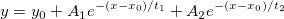

内容 |

オフセット付き2次指数減少関数
数: 6
名前：y0, x0, A1, t1, A2, t2
意味：y0 = オフセット, x0 = 中心, A1 = 振幅, t1 = 崩壊定数, A2 = 振幅, t2 = 崩壊定数
下側境界: なし
上側境界: なし
Note: t1とt2ではそれぞれ異なる初期パラメータが使用され、フィット結果として t2 > t1 が成り立つようになっています。
nlf_expdecay2(x,y0,x0,A1,t1,A2,t2)
FITFUNC\EXPDECY2.FDF
指数関数